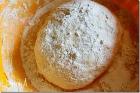
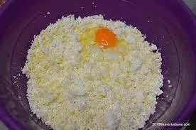
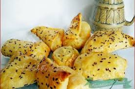

Ustensile necesare
- un castron
- un cutit
- o tava
- hartie de copt
- o razatoare
- rabdare si talent
Ingrediente si continut caloric
| Ingredient |
Cantitate |
Kcal |
| Cascaval |
300g |
950 |
| oua |
3 |
450 |
| sare |
50g |
0 |
| aluat foietaj |
1 pachet |
400 |
| Total kcal |
1800 |
Pasi pentru preparare
- Aluatul de foietaj trebuie lasat cateva ore pentru a ajunge la temperatura camerei.
- Dupa ce ajunge la temperatura potrivita aluatul se taie in dreptunghiulete de dimensiuni egale.
- Se rade cascavalul si se amesteca bine cu cele 3 oua. Se adauga in compozitie si sarea.
- Compozitia se presara pe cate un dreptunghi de aluat. Deasupra se aseaza un alt dreptunghi de aluat pentru
a inchide compozitia.
- Pateurile se aseaza pe o tava cu hartie de copt. Se lasa la copt aproximativ 30 de minute.
Puteti urmari prepararea retetei in videoclipul urmator
Galerie de imagini

aluat pateuri

ingrediente pateuri

pateuri gata